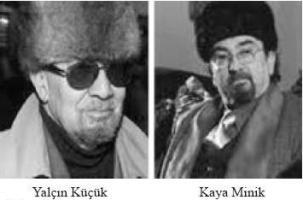

Şebeke'nin –ki aynı zamanda Yalçın Küçük'ün kitaplarından da birinin adıdır– nasıl çalıştığını çok iyi biliyoruz: Önce Yalçın Küçük'ü PKK'yla ilişkili gibi gösteren kimi fotoğraflar İnternet sitelerine ve dinci basına servis ediliyor. Ardından Cemaat'in ve Cemaat yandaşı olan gazetelerde bu haberler yeniymiş gibi sunuluyor, sonra da gizliden gizliye bir propaganda başlıyor.
Mesela Yalçın Küçük'ün PKK'nın "bir numarası" olduğunu iddia edenler bile çıkıyor. Ve ne yazık ki çok önceden tartışılan, üzeri kapanmış, hatta yargılamalar yapılmış bir mesele yeniden Ergenekon iddianamesine giriyor.
Nasıl mı oluyor... Zaten korkutucu olan da bu...
Yalçın Küçük hakikaten PKK'nın bir numarası, ideolojik önderi olabilir mi?
Bu sorunun yanıtını vermek için tarihsel süreci ve PKK'nın geçirdiği değişimleri ayrıntılarıyla incelemek gerekiyor.
Bu süreci çok iyi bilen birinin sözleriyle başlayalım... Eski Genelkurmay Başkanı İlker Başbuğ anlatıyor:
"Bölücü terör örgütünün kuruluşunda, örgüte hâkim olan ideoloji, öncelikli olarak sınıf temelli ve ikincil olarak etnik referanslı, Marksist-Leninist bir ideolojiydi. Örgüt, 1994'ten sonra, Marksist-Leninist ideolojiyi gittikçe geri plana iterken, etnik kimliği ön plana çıkarmıştır."[101]
İşte tam da bu tarihlerde, PKK'nın kendisini Marksist-Leninist bir hareket olarak tanımladığı zamanlarda, Türkiye'den bazı aydınlar, devrimciler bu oluşumu kendilerine yakın bulmuş, bunun bir devrimci örgüt olabileceğini düşünmüşler ve belli ölçüde destek çıkmışlardı.
Yalçın Küçük'ü, Doğu Perinçek'i PKK'yla ilintili gibi göstermeye çalışanların dayanak noktası da bu dönemki kısa süreli yakınlıktan ibaret. PKK'ya çok kısa bir süreliğine sempati duyan pek çokları gibi, Yalçın Küçük onlarla yolunu hemen ayırdı.
Bu ayrılığın da altında temel bir gerekçe vardı...
Aynı alıntıyla devam edelim:
"Soğuk Savaş sonrasında bölücü terör örgütünün benimsediği ideoloji/birincil kimlik geçerliliğini yitirince örgüt, bütün vurgusunu etnik kimlik üzerine yapmaya başladı. Böylece, terör ve şiddeti kullanarak bir yandan Kürt kökenli vatandaşlarımız üzerinde sosyal kontrol sağlamayı, bir yandan da yeknesak bir etnik kimlik inşası gerçekleştirmeyi amaçladı."
Başbuğ'un anlattığını Prof. Yalçın Küçük de gördü tabii ki. PKK milliyetçi bir örgüt oldu... Etnik hesaplar yapmaya başladı... Ve o da PKK'nın Marksizm'le bir ilgisi olmadığına karar verip koptu.
Dünyanın her yerinde entelektüellerin ideolojik değişimlerine sık rastlanır; bu aynı zamanda bir arayışın da sonucudur. Zaman zaman eleştirdiklerine sonradan sahip çıkmaları, zamanında parçası olduklarına sonradan mesafeyle yaklaşmaları doğaldır.
Bu beyni farklı çalışan bir entelektüelin olağan kaymalarıdır...
Yalçın Küçük isteseydi PKK'yla bağlarını koparmaz, bugün hâlâ Fransa'da yaşamaya devam eder, üstelik söylemleriyle Avrupa'nın bir numaralı entelektüeli olurdu. Mitterand'ların evinden tutun da New York'ta, Londra'da davetlerin bir numaraları siması olur, konferanslar verir, Batı gazeteleri onu bağrına basardı.
Peki o ne yaptı? Fransa'da yaşarken, hapse gireceğini bile bile, rahatını bozmayı göze alarak Türkiye'ye döndü... Yargılandı, içeri girdi...
Cemaat bunu bilmiyor mu? Bilmemesine imkân var mı? Belli ki Yalçın Küçük'ün kitaplarına en azından bakmışlar. Zira Apo'yla çektirdiği bugün "sızdırılan" fotoğrafların hepsine zaten kendi kitaplarında yer vermişti. Bu gizlenen, korkulan bir ilişki değildi ki... Küçük'ün Apo'yla görüşmeleri dönemin dergilerinde de kendi imzasıyla yayımlanmıştı zaten.
"Özel" diye sunulan haberin hiçbir özelliği yok; "şok belge" diye anons ettiklerinin "şaşırtıcı bir tarafı" yok.
Ama bu sistematik kampanya konunun ayrıntılarını bilmeyenlerde belli ki bir anlamda tesirli oluyor.
Bakın, Yalçın Küçük'ün başına ne geldi.
Mersin, Ocak 2011.
60 yaşındaki emekli bir polis boynuna kızıl atkı dolamış, kafasına bir kalpak takmış; bir protesto gösterisine kalkışıyor. Bilindiği gibi kalpak ve kırmızı atkı Prof. Küçük'le özdeşleşen simgeler.
Zaten o da Yalçın Küçük kılığına girmiş ve "temsili" idamını gerçekleştirmeyi planlıyor. İpi ağaca bağlıyor, urganı boynuna geçiriyor ve şovunu yapıyor.
Ancak tam o sırada sivil polis onu kurtarıyor! Çünkü az kaldı kendi boynuna geçirdiği urgan yüzünden boğulacakmış.
Normal şartlarda "Bir Levent Kırca skeci" der, gülüp geçerdim. Ama bu sıradan bir protesto değil, ne yazık ki bir skeç hiç değil.
Cemaat'in televizyon kanalında bir süredir ağırlıklı olarak asker ("Tek Türkiye" ve "Şefkat Tepe") ve polis ("Kollama") temalı diziler yapıyor. Güneydoğu sorununa eğilmeye bayılıyorlar.[102]
Bu dizilerde de Yalçın Küçük'e benzeyen, Yalçın Küçük'ü andıran, tıpkı Yalçın Küçük gibi kalpak takıp boynuna kırmızı atkı dolayan bir "deli profesör" karakteri yarattılar. Adı da "Kaya Minik"... Evet Yalçın Küçük'e karşı Kaya Minik![103]
Geçenlerde bu dizilerden birini beklerken STV haber bültenine baktım, Prof. Küçük'ün katıldığı bir panelden "görüntü" sızdırılmış. Altyazılarla, "Bakın ne diyor, bakın halkı nasıl kışkırtıyor," diyen bir dış sesle itibarsızlaştırma kampanyası aynen sürüyor.
Oysa Küçük sadece kendi görüşleriyle Cumhuriyet'e sahip çıkıyordu. Haberin sonuna o meşhur Apo görüntülerini eklemişler elbette.
Cemaat mensupları 28 Şubat sürecinde Fethullah Gülen'in ağladığı o "kült" görüntüler sızdırıldı diye hâlâ öfkeli.
Ama aynı yöntemi kendileri kullanmaktan nedense hiç çekinmiyorlar.
Yalçın Küçük bu kasıtlı yayınlardan dolayı İçişleri Bakanı Beşir Atalay'a bir dilekçe yazdı ve "Can güvenliğim tehlikede," dedi.
Elbette bir yanıt alamadı.
Onun yerine sistematik propagandada yeni bir perde yaşandı ve Yalçın Küçük "temsili" olarak idam edildi.
Bu işler böyle başlar zaten... Önce bir şakayla, bir skeçle...
Ya sonra?
Sonrası 3 Mart 2011. Yalçın Küçük, iki sene önce tutuklanıp bir hafta sonra salındığı Ergenekon davasından yine gözaltına alındı. Soner Yalçın ve odatv.com'u Ergenekon'a bağlayan en önemli kanıt olarak Yalçın Küçük'le kurulan iletişim gösteriliyordu.
Halbuki Soner Yalçın ve Yalçın Küçük son iki senede iki kere cenazelerde karşılaşmış, ayaküstü sohbet etmişlerdi. Referandumdan sonra da araları biraz açılmıştı; özellikle Yalçın Küçük odatv.com'un yeni CHP'ye destek veren çizgisinden rahatsızdı.
Bunlar bilinmez mi, telefon konuşmalarından, yazışmalardan anlaşılmaz mı?
Yalçın Küçük'ün beni arayıp Soner Yalçın'ı şikâyet ettiği, "Böyle gazetecilik olmaz, Kemal'ci oldu bunlar," dediği konuşmalar emniyet kayıtlarında yok mudur...
Gözaltına alındıktan birkaç gün sonra Yalçın Küçük tutuklandı.
Soner Yalçın, savcının kendisine sorduğu iddialar için "Bunlar Samanyolu TV'deki kötü dizi senaryolarına benziyor," demişti. Zorlama bağlantılar, bilgisayara yüklenen virüslü dosyalar, zekadan yoksun üretilmiş sahte dokümanlar, bu dokümanlara dayanarak insanlara ithamlarda bulunmalar...

Samanyolu TV'de yayınlanan "Kollama" isimli dizide sadece Yalçın Küçük parodisi yoktu. Ergenekon davasının, Savcı Zekeriya Öz de dahil olmak üzere hemen hemen bütün kahramanlarından yola çıkan karakterler oluşturuldu. Dahası, olaylar davanın seyrini de bir anlamda önceden kestiriyordu.
Ezgi Başaran'ın "Kollama" incelemesini paylaşmak isterim:[104]
Son birkaç aydır yaşadıklarımızı alt alta dizip "Of dizi bile olmaz bundan, o kadar uçuk, o kadar gerçeküstü" diye söyleniyorduk. Yapılmışı var. Dizi olarak. Samanyolu TV'de her cuma.
"Kollama" adlı bu dizi, "bizi kollayanların hikayesini" anlatıyor. Nasıl bir hikaye derseniz, şöyle tanımlanmış: "Birileri Türkiye'nin kara kutusu sayılacak bir kitabı çalmıştır. Türkiye'nin tarihine yön vermiş suikastlerin, provokasyonların, komploların failleri, planları, nedenleri tüm detaylarıyla bir bir yazmaktadır. Bu kitap öyle büyük bir sır taşımaktadır ki kitabı ele geçiren yarının Türkiye'sini ele geçirecektir."
Bizi kollayanlar, yani bu kitabın peşine düşenler büyük Türk polisi, büyük istihbaratçılar ve tabii müthiş savcı Zeki Yahya'dır. Tarihin en mühim davası görülmektir: Erkenkondu.
Savcı Zeki Yahya, kardeşi kardeşe düşüren Erkenkondu örgütünün üyelerini bir bir "Sivritepe"ye tıkmaktadır. Bir tarafta "kendisini aydın zannedenler", örgütün bir numarası Baron ve onun yardımcısı rolünde Kaya Minik... Kalpaklı, keçi sakallı, boynundan kırmızı atkısını eksik etmeyen "küçük" bir adam... Biraz Yalçın Küçük'ü mü andırıyor ne...
Diğer tarafta elinde "kapı gibi deliller" barındıran savcı Zeki Yahya...
Baskınlar yapılır, belgeler toplanır, hard diskler, laptop'lar didik didik edilir. Fakat karanlık güçler de salak mı... Boş durur mu...
Baronun talimatıyla, "kullanacakları gazetecilerin listesinin", "ulusal medya planının" filan istiflendiği mavi mavi klasörler konteynerlerde yakılır. Ama büyük Türk polisi şaşkın mı... Yer mi... "Mutlaka bir yerde zulalanmış bir hard disk vardır..." Mutlaka bulacaklar, bugün değilse yarın.
Belki yarından da yakın...
Nitekim istihbarat biriminin yakışıklı oğlanları, Erkenkondu'nun 12 Haziran'daki seçimler için planladıklarına bir miktar vâkıf olurlar: "Meclis'e üç bağımsız Kürt milliyetçisi sokulacak, onlar da Meclis'i feci şekilde karıştıracak. Kürt-Türk ayrılığı çıkacak."
Nefes kesen, dallı budaklı bir hikaye...
Çünkü bakın bir yanda da Zeki Yahya'ya ve Erkenkondu davasına karşı basında "sulandırma" operasyonu tam gaz sürüyor. Bu basın da yani, eh! "İki buçuk yıldır ne yer ne içer diye sormadıkları adam Erkenkondu'dan tutuklanınca hepsi kefil kesildi. Bizim savcıdan sonra kefalet piyasası çok arttı..." Pis basın, bunları da yazın...
Bu arada Kaya Minik... Hani şu fazlaca elini kolunu sallayarak, bağırarak konuşan "küçük" adam boş durmuyor. Savcı Zeki Yahya'ya bir komplo kurar. Sarışın bir kadınla anlaşır, canlı yayına çıkarır. İklim Bayraktar'a pek benzeyen sarışın kadın, savcının onu taciz ettiğini söyler. "Gel seninle özel bir yerlere gidelim, baş başa kalalım" demiştir savcı ona.
Halbuki yok öyle bir şey. Tüm melanet Kaya Minik'in kalpağının altından çıkıyor. Ama kör talih... Savcı Zeki Yahya bir süreliğine görevinden alınır. Yerine atanan kadın savcı da aslında "kuyruğunu Erkenkondu"ya kaptırmıştır. Nasıl bir savcı bu? Gözlüklü, açık tenli, yana ayırdığı saçını küçük bir topuz yapmış dolaşıyor. Tesadüf bu ya, aynı YARSAV Başkanı Emine Ülker Tarhan...
Tam işler çözülecekken, Bir Numara yatına atlayıp kaçmaya çalışmasın mı... Artık haftaya kaldı, aydınlığa kavuşmamız.
Size bir şey söyleyeyim mi, sayın sayın seyirciler. Ya neler oluyor ülkede bir türlü anlayamıyorum, diyen sayın seyirciler...
Hayatımız lümpen bir Samanyolu dizisi bundan böyle. Olay bu. Olan bu.
Not: Ben bir şeyi sulandırmaya çalışmıyorum, aman yanlış anlaşılmasın. Tırnak içinde geçen tüm ifadeler, isimler 'Kollama' dizisinden alınmıştır. Sulandırma varsa bana ait değil yani.
Başaran'ın yazısının yayımlanmasının hemen ardından "Kollama" dizisindeki bir senaryo daha gerçek oldu: Hiç kimsenin beklemediği bir şekilde Ergenekon'u bu aşamaya kadar getiren tartışmalı savcı Zekeriya Öz görevden alındı.
Öz'ün görevden alınmasının nedeni dizideki gibi bir "sarışın kadın" değildi elbette; bunu tutturamamışlardı.
Ama soruşturmanın ekseninin kayıp bir muhalif avına dönüşmesinden duyulan rahatsızlık etkiliydi. Önce Avrupa Birliği, ardından Amerika Birleşik Devletleri sık sık basın özgürlüğüne vurulan darbeleri gündeme getirdi.
"Sadece dışarıdaki algı meselesi de değil," diye yazıyor Aslı Aydıntaşbaş, "Son iki haftadır AK Partililer kendi aralarında bir araya geldiklerine mırıl mırıl 'Artık çok ileri gittiler,' diye hayıflanıp duruyor. Ergenekon davasına inanmadıkları için, derin devleti sevdikleri için değil: Ama davanın genişletilmiş halinin 'Başka birilerinin kan davası' uğruna AK Parti'ye bedel ödettiğini düşündükleri için."[105]
Bu kan davası zaten bardağı taşıran son damla oldu.
Bu kan davası basılmamış kitapları yok etmeye kadar vardı.
Ama bunu da "Kollama" değil, Yalçın Küçük tahmin etmişti önceden; avukatı aracılığıyla kamuoyuna yaptığı açıklamayı paylaşmak isterim:
Hitler basılmış kitapları yok ediyordu. Bunlar basılmamışa saldırıyor, basılmasına izin vermiyorlar. Bu kadar korkuyorlar. Savcılık aşaması iki karşıt fikirli önemli ismin karşılıklı sohbeti şeklinde geçti. Savcı Öz sakindi, güler yüzle tutukluyordu. Savcı, ne desem diyeyim tutuklayacaktı, sorularına yanıt vermedim.
Bu soruşturma, Samanyolu'ndaki dizilere dayanılarak yapılmaktadır. Soruşturmaların, gözaltların dizilerdeki senaryolara göre yapılması, aydının ve Türk halkının aklına hakarettir. "Kollama" türünden diziler cezai soruşturmaların konusu olamazlar. Bu, akla tecavüzdür; savcının bunlara dayanarak hazırladığı sorulara yanıt veremem mümkün değildir. Vermedim. Soruşturmada Ergenekon ile Ankara arasındaki bağlantıyı kurmakla suçlanıyorum. Daha önce savcıyı kanser etmiştim, şimdi hem şeytan hem de fikir babası sayılıyorum ve suçlanıyorum.
Savcı Öz insanlarla görüşmeyi, fikir alışverişinde bulunmayı suç saymaktadır. Genç yazarlar karpuzun bostanda yatması gibi yata yata değil, yaza yaza büyür. Bu yolla genç yazar yetişmez; öldürüyorlar, önünü kesiyorlar. Yankı dergisi bir okuldu; böyle yetiştiler ve yetiştik. Bunlar, gelişmenin önüne set çekiyorlar. Hınçlarını yazarlardan, basılmamış kitaplardan alıyorlar.
Yayımlanmamış kitabın imhası:
İmamın Ordusu'na dokunan yanıyor!
Ergenekon davası başladığından beri kendime sık sık tekrarladığım, bu kitapta da yer verdiğim bir söz dolaşıyor kafamda: Yaptığımız şakalar gerçek oluyor.
Erdil Yaşaroğlu, Penguen dergisine bir karikatür çizmişti. Bilgisayar başında oturan birini tam parmağını klavyeye değdirecekken arkasında duran otoriter bir figür "Elin e'ye gidiyor yoksa Ergenekon mu yazacaksın?" diyor.
Bu esprinin gerçek olabileceğine inanılabilir mi?
Ne yazık ki Türkiye karikatürleri bile canlandırmada çok başarılı bir ülke haline geldi: Polis, tutuklu gazeteci Ahmet Şık'ın henüz yayımlanmayan kitabı İmamın Ordusu için bir cadı avı başlattı, yayınevleri basıldı, kitap imha edildi. Daha yayımlanmamış, yayımlanıp yayımlanmayacağı belli olmayan bir kitaptan bahsediyorum.
Şık Cemaat'in polis teşkilatındaki etkisini anlatıyordu. Bu kitaptan neden bu kadar ürktüklerini anlamak güç değil. Hanefi Avcı'nın Haliç'te Yaşayan Simonlar kitabı 500 bin gibi iddialı bir satış rakamına ulaşmıştı. Belli ki kitap yazmanın da inşalara ulaşmanın bir yolu olduğu anlaşıldı. Kitapların kamuoyunu etkilediğini de fark ettiler ve bunun önüne geçmek istiyorlar.
Yayımlanmamış kitaplara savaş açarak...
Bir akşamüstü Kadıköy'deki İthaki Yayınları'na gittiler önce. Ardından Topkapı'daki yayınevi deposuna. Basılı kâğıtları aldıkları gibi dijital kopyaları da yok etmek için bütün hard disc'lere el koydular: Arada başka kitap çalışmaları da vardı...
Bu da yetmedi, bir gün sonra yayınevine yeniden gittiler. Aynı zamanda Radikal gazetesine baskın düzenleyip, Şık'ın yakın arkadaşı (ve zamanında ortak kitap yazdığı) Ertuğrul Mavioğlu'nun bilgisayarında kitabın kopyasını araştırdılar.
Bu baskın da saatler sürdü...
Kitabın kopyasını polise teslim etmemek suç sayıldı, tıpkı kitabı yayımlamak gibi... Eğer elinizde kitabın hasbelkader bir kopyası varsa, diyelim ki Ahmet Şık arkadaşınızsa ve "Şöyle bir göz atsana ne düşüneceksin," diye yolladıysa –ki olabilir, herkes yapar– siz de otomatikman suçlusunuz.
Bunlar Stasi yöntemleri; Doğu Alman istihbaratının taktikleri... Faşizmin yansımaları değil de ne?
Yalçın Küçük "Hınçlarını basılmamış kitaplardan alıyorlar," yazmıştı.
Eskiden kitapları meydanlarda toplayıp yakarlardı, Türk polisi eli arttırdı ve yayımlanmamış kitapları engelliyor.
O gece çok korktum. Ne baskınlar, ne tutuklamalar, ne yürütülen komplolar, ne tehditler. Hiçbiri Ahmet Şık'ın yazdığı kitaba el konması, imha edilmesi, yayınevinde arama yapılması kadar ürkütmedi beni.
Çünkü son tahlilde eğer hâlâ hayattaysanız, vücudunuz ve beyniniz sağlamsa tutuklamalar, yargılamalar, mahkumiyetler geçicidir. Zordur kuşkusuz ama bir gün biter. Eğer hayatınız yazıysa, en azından yaşadıklarınızı kâğıda dökebilme ihtimaliniz vardır.
Şimdi bunu da elimizden alıyorlar, farkında değil misiniz?
Pek çoğumuz yazı yazmaktan başka hiçbir şey bilmiyoruz. Pek çoğumuz yazıyla nefes alıp veriyoruz. Ve giderek yazabileceğimiz alan daralıyor.
Ben artık defterime not tutmaktan bile çekinir hale geldim.
Gazeteler, televizyonlar, internet siteleri derken şimdi sıra kitaba geldi. Artık yazdıklarınızı tereddütsüz yayımlayacak, kitap basmaya cesaret edecek yayınevi bulur musunuz sanıyorsunuz; buldunuz diyelim, hangi dağıtımcı cesaret eder artık...
Daha ne kaldı, daha nereye kadar gidecekler acaba?
Dokunan yanıyor.